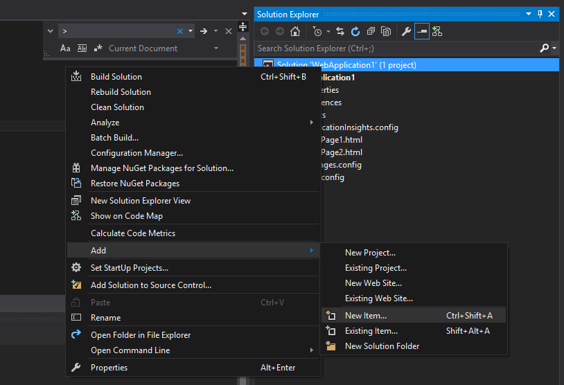
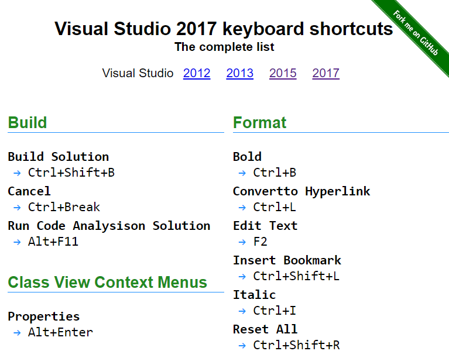
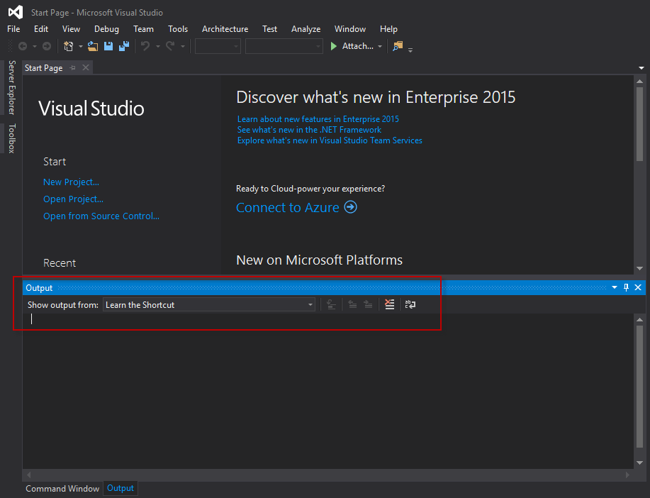
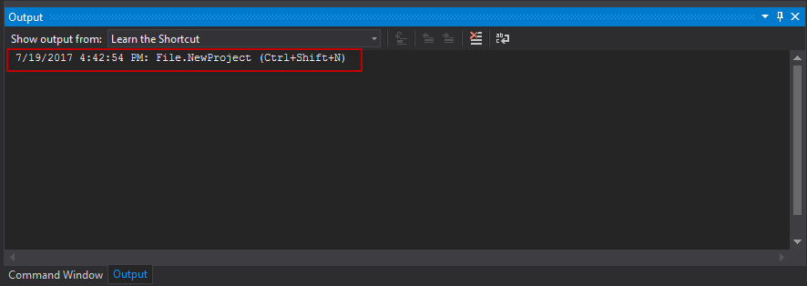
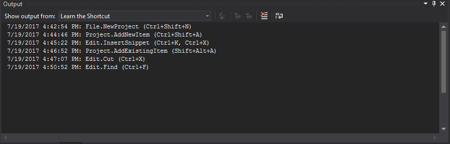

介紹一個最簡單且有效學習 Visual Studio 快速鍵的套件

[Visual Studio] 長年以來都號稱是地表最強的IDE，以功能與支援程度來講真的是實至名歸，甚至目前也移植到 Mac 給更多開發者做使用。
而對於開發者來說，善用快捷鍵能有效地提高生產力。但學習一套如此強大的IDE上面的操作與快捷鍵使用是非常需要時間去建立與養成習慣。
官方的文件其實有註明 VS快捷鍵 的清單，Visual Studio 中的預設鍵盤快速鍵。小弟自己是習慣到Visual Studio keyboard shortcuts去看，目前整理了 VS 2012 到 VS 2017 的完整快捷鍵清單。

而如果有工具可以協助我們在一般介面操作時就能提供該動作的快捷鍵提醒，方便我們學習與下次使用的話，就可以加速我們的學習效果與生產力，而 Learn the Shortcut 就是一個這樣的 Visual Studio 套件，協助我們可以快速的學習複雜且龐大的VS快捷鍵。
Setup and Use Extension
安裝方式非常簡單，只要到官方下載Learn the Shortcut套件後重新啟動你的 Visual Studio 即可在 Output Window 看到新增了一個 Learn the Shortcut 的來源，而這時我們所有在VS上的操作如果有快捷鍵的就會呈現在這邊如下：

這邊當我們從介面選擇新增一個新的網頁應用程式專案(Web Applicaiton Project)則會在完成後顯示該快捷鍵指令：

而當我們操作的指令有提供快捷鍵時，每個對應的指令都會被顯示在這個視窗上面：

如此一來我們可以快速地邊做邊學習快捷鍵了，是不是很簡單。
Keypboard Shortcuts Theme Management : Hot Keys 2015、Hot Keys 2017
這邊要同場加映另外兩個套件: Hot Keys 2015 - Keyboard Shortcuts與Hot Keys 2017 - Keyboard Shortcuts，這兩個套件是一樣的只是對應的Visual Studio 版本不同要使用不同的套件。而該套件可以讓我設定我們目前快捷鍵要以哪一種方式做編排(如果你有同時安裝Resharper的需求就可以透過該套件幫你選擇你目前要用的快捷主題是哪一種)

而每種快捷鍵的安排可以參考: KeyBindings/KeyboardSchemes/KeymapRefs/
Visual Stuido Code Shortcuts
這邊也提供 VSCode 官方的快捷鍵清單：